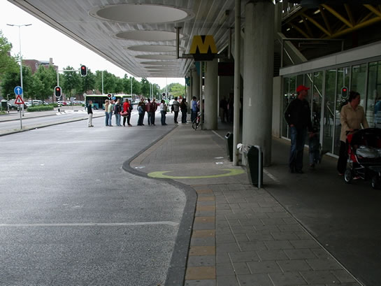
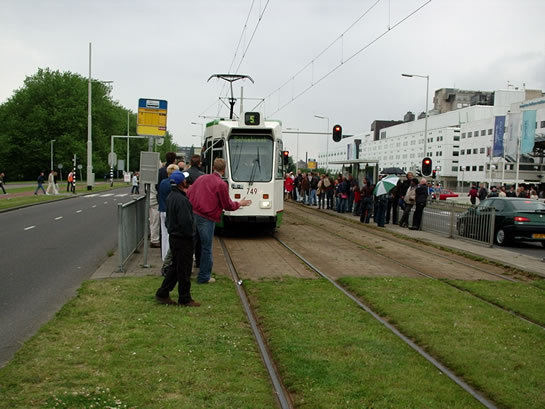
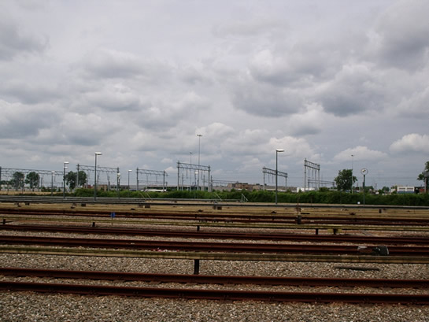
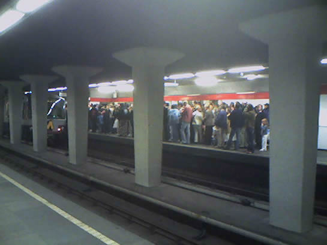

Red Bull Airrace in Rotterdam, grote drukte in metro...
- maandag 08 december 2008 09:07
- Geschreven door Simon
Op zondag 12 juni 2005 was de Nieuwe Maas in het centrum van de stad het toneel van een spectaculaire luchtshow. Stuntpiloten uit de hele wereld moesten al stuntend zo snel mogelijk een parcours afleggen. Om de veiligheid in de stad te garanderen werd een groot aantal wegen afgesloten, waardoor veel van de 700.000 belangstellenden gebruik moesten maken van het openbaar vervoer om in de stad te komen. Veel tram- en buslijnen werden omgeleid of reden niet, waardoor de metro het belangrijkste vervoermiddel werd, met name tussen Rotterdam Noord en Zuid. Zo reden tramlijnen 20, 23 en 25 niet over de Erasmusbrug omdat deze werd gebruikt om onder door te vliegen door de stuntpiloten. Uit veiligheids-overwegingen was de volledige brug afgesloten.
Park & Ride-parkeerplaatsen bij diverse metrostations stonden nagenoeg volledig vol, ook bij niet-P&R-haltes als station Hesseplaats stapten veel automobilisten over op het openbaar vervoer. Kaartautomaten draaiden overuren, met grote rijen mensen voor de automaten tot gevolg. Diverse automaten raakten door hun wisselgeld heen waardoor er alleen nog maar gechipt kon worden of mensen het zonder wisselgeld moesten doen.
Er werden vier extra metrodiensten ingezet op de Erasmuslijn, allemaal vierwagentreinen uit de 5300-serie. De hieraan toegewezen wagendienstnummers waren 996, 997, 998 en 999. Dit had tot gevolg dat er op emplacement Waalhaven geen enkele dienstvaardige metrotrein meer stond. Station De Akkers werd als gevolg van de enorme drukte een half uur niet aangedaan door de Erasmuslijn. Op de Calandlijn werd één extra driewagentrein ingezet, waarvan het wagendienstnummer onbekend is. Er werden géén extra pendelmetro's ingezet tussen Schiedam Centrum en Capelsebrug zoals op 10 april j.l. bij de Marathon het geval was (nieuwsitem Marathon 2005). Dit was gevolg van personeelsgebrek op de Calandlijn. De RET moest veel mensen inzetten in de stations om de stroom van passagiers te begeleiden.
Na afloop van de race werd station Leuvehaven afgesloten, eveneens uit veiligheidsoverwegingen. De Erasmusbrug werd na afloop van de race weer spoedig vrijgegeven, waardoor rivierkruisende tramlijnen weer op gang kwamen en station Leuvehaven enigszins konden verlichten van passagiers. Het station bleek te krap om de grote mensenmassa aan te kunnen, mede door de naar verhouding smalle perrons. Op diverse stations was het zo druk dat metrobestuurders een lastgeving kregen: ze moesten met zeer lage snelheid (ongeveer 10 km/u) de stations moesten binnenrijden en verlaten. De drukte was meer geconcentreerd dan bij de Marathon, bij diverse stations moest lang gehalteerd worden in de ene richting maar kort in de andere richting, afhankelijk van de voornaamste reisrichting van de mensenmassa. Hierdoor reden beide lijnen onregelmatig. Op de Erasmuslijn viel de dynamische reizigersinformatie enige tijd uit.
Met dank aan Rik Roeske voor de meeste foto's.

Station Spijkenisse Centrum met een rij voor de verkoopautomaten.

Tramlijn 5 reed een afwijkende route, hier te zien op tramhalte Erasmus MC, die normaal alleen door lijn 8 wordt bediend. Ook lijnnummer 15 werd gezien.

De opstelsporen van remise Waalhaven waren geheel leeg, alles wat kon rijden, reed.

Extreme drukte op Beurs-Calandlijn perron 2 na afloop van de race. Reizigers werd verzocht zich te verspreiden over de perrons (foto: retmetro.nl).